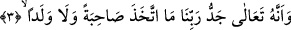

Onun dâvetine insanlar ve cinler dâhildir.
Kıyâmete kadar her cinsten ümmeti vardır
Sultan O’dur diğer mahlûkât onun çocuğu
Padişahlar padişahı O’dur, diğer mahlûkât onun askeri.
“Artık kimseyi” bu günden sonra, bir başka ifâdeyle hakkı öğrendikten sonra
“Rabbimize asla” Kur’an’da ifâde edilen tevhide dâir işâretler uyarınca “ortak
koşmayacağız.” Bir başka ifâdeyle; bizler mevcûdâttan hiçbir kimseyi îtikâdımızda
Rabbimize ortak koşmayacağız, O’ndan başkasına asla tapmayacağız. Çünkü îmânın
tamama ermesi ancak şirkten ve küfürden uzak kalmakla olur. Nitekim İbrahim (a.s.)
şöyle diyordu: “Ben sizin Allah’a ortak koştuğunuz şeylerden uzağım.” (el-En’am,
6/78)
Kur’an’ın mûcize ve eşsiz bir kitap olması, kendisine îmânı gerektirir. Yine Kur’an’ın
hakka ileten bir kitap olması, şirki kökünden söküp atmayı ve bütünüyle Allah Teâlâ’nın
dinine girmeyi gerektirir. Şu hâlde “gerçekten biz hakka ileten harikulâde güzel bir
Kur’ân dinledik” âyet-i kerîmesi topluca “ona îman ettik, artık kimseyi Rabbimiz’e
asla ortak koşmayacağız” âyetinin sebebi kılınmıştır. Bu sebeple “asla ortak
koşmayacağız” anlamına gelen ifâde fâ harfi ile atfedilecek iken vav harfi ile
atfedilmiştir.
3. Hakîkat şu ki, Rabbimizin şânı çok yücedir. O, ne eş ne de çocuk edinmiştir.
“Enne” harfi ile başlayan bu cümle ve bunu izleyen cümleler hep aynı durumda
mahallen mansubdur. Bu cümleler birinci âyette geçen “dinledi” fiiline mâtufturlar ve
Peygamber Efendimiz’e vahyedilen şeyler arasındadır. Peygamber (s.a.) Efendimiz’e
vahyedilen -hikâye yolu ile- cinlerin bizâtihi kendi sözleridir. Şu hâlde burada sanki
şöyle denilmiş oluyor: “De ki bana şöyle şöyle ve şu sözler vahyolundu.” Bu yapılan
açıklamaya göre “«Enne» ile başlayan cümleler yâni beşinci âyette yer alan “asla yalan
söylemezler sanmıştık”, altıncı âyette yer alan “şüphesiz insanlardan bâzı kimseler
cinlerden bâzı kimselere sığınırlardı da onların azgınlıklarını arttırırlardı”,
sekizinci âyette yer alan “doğrusu biz cinler göğü yokladık fakat orasını sert
bekçilerle alevlerle doldurulmuş bulduk” âyetleri ve bunlara benzeyen diğer ifâdeler
eğer yukarda geçen cümleye atfedilecek olursa bu yanlıştır. Çünkü bunlar Peygamber
Efendimiz’e (s.a.) vahyedilmiş hususlardan değildir. Bunlar cinlerin kendileri hakkında
verdikleri haberlerden ibârettir” biçimindeki itiraz temelsiz kalmış olur.
Yukardaki cümleyi “enne” ile değil de “inne” ile okuyan âlimler cinlerin sözlerinden
sonra gelen hikâye cümlelerini bu sözlere atfetmektedirler. Bu açıklama tarzı daha ağır